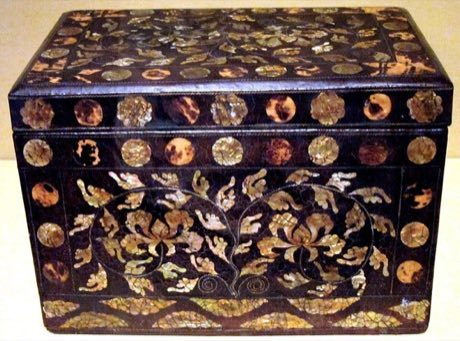

Home / Living Traditions / Japan and Korea
Playable heritage gameNajeon chilgi
Also known as 나전칠기 · mother-of-pearl lacquer inlay
Najeon chilgi is Korean lacquerware decorated with thin slivers of shell. A craftsperson saws each petal, leaf or vine from a pearly sheet, beds the pieces into a black lacquered surface and polishes it until the shell glows.


How to play
- Look at the framed picture: it shows the finished panel.
- Trace each outline on the shell sheet with the fretsaw. A piece cut all the way round lifts into the tray.
- Drag every piece to its own recess in the black lacquer.
- Rub the cloth across the panel until the pearl shines, then press Check.
Rules at a glance
- Three steps: cut, set, polish. Your score is the average of the three.
- Cutting is judged on how closely your saw line follows the outline.
- Setting is judged on how near each piece lies to its recess; a piece close enough snaps in.
- Polishing is judged on how much of the shell you have rubbed clear.
- Doing nothing scores nothing. Undo takes back your last cutting stroke.
About the tradition
Najeon chilgi has been made on the Korean peninsula for well over a thousand years. Workshops in Korea still cut, set and polish shell for boxes, chests and small panels, and the craft is passed on from teacher to apprentice.
Origins
A living tradition passed from person to person; it is not tied to a single dated origin. It belongs to the cultural world of Japan and Korea.
Credits
- Photo: Hiart, CC0, source on Wikimedia Commons
- Text: CC BY-SA 4.0, World Heritage Games.
Sources

Get the app
Najeon chilgi is one of 13 woodcraft and metal crafts in the Woodcraft & Metal of the World app for Android. Submitted to Google Play; in review. Store links appear here the day it goes live. One app, many traditions, no account needed.
More games to play

Lost-Wax Bronze Casting
Japan +2 · Crafts and makingPlay preview · in the Craft Designs of the World app
Aranmula metal mirror
Worldwide · Crafts and makingPlay preview · in the Woodcraft & Metal of the World app
More from South Korea


Bojagi
South Korea · Crafts and making

Dalgona
South Korea · Dexterity and skill games
Dougong Bracket Stacking
China +2 · Puzzles and mind games